Generative Design workflow
The objective of generative design is to optimize the mass (weight) of the design space (the part model) by removing material based on a set of physical loads and manufacturing constraints. Faces or features that you preserve to meet functional requirements are not removed.
Structural loads (1) and operational constraints (2) are applied to the part selected as the design space. A material region around the mounting hole was preserved. The result of the generative design process (3) is a lighter weight, more organic-looking part.
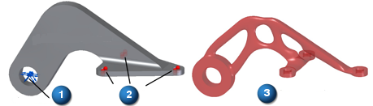
Use the following process on an existing part model to generate an optimized shape. For more information, see a Generative Design example.
-
Open a part model with a design body that has minimal features. You can open a native Solid Edge part model (*.par). You also can optimize a part used in an assembly by opening the part in the context of a Solid Edge assembly.
You can optimize a Parasolid file (*x_t) or a file created by another CAD system by first opening the file in Solid Edge using an ISO metric or ANSI part file template.
Tip:You get the best results by working on a part with only essential features defined in it. This leaves more material for the optimization to work with, producing better results.
-
On the ribbon, click the Generative Design tab to display the application commands.
-
In the tab set that contains PathFinder, click the Generative Design tab to display the Generative Design docking pane. This is where you manage your generative studies.
-
Select a material for the part using the Generative Design tab→Material group→Material Table command , or select a material from the list.
-
Choose Generative Design tab→Generative Study group→Create Generative Study .
This creates a new Generative Study 1 node in the Generative Design pane, and populates the study node with information based on the open part model document, as well as placeholders for inputs that you must define (preserved regions, loads, constraints).
The body to optimize was selected automatically and displayed as the Design Space (Defined).
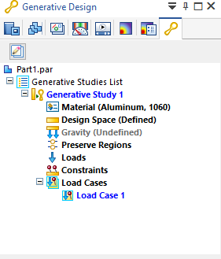
-
Define one or more engineering or production requirements for the generated body:
-
Identify the geometry that is essential to the operation of the part, and the additional volume on faces that you want to keep. To do this, Preserve a region in the geometry that you do not want to alter.
Example:Select holes, such as mounting holes, that you want to keep.
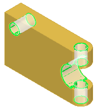
Example:Preserve the exterior faces of a shape to maintain the original design intent, particularly if you are re-evaluating the design of an existing part.
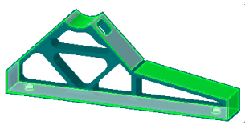
Example:In this simple example, a region was defined on each face that has a load or constraint.
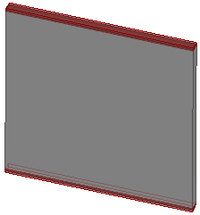
-
Specify Manufacturing settings to account for different production methods.
-
-
Apply at least one load to the part—Define a physical load.
Example: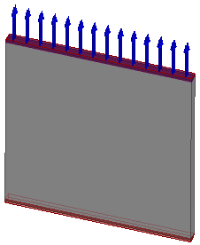
-
Apply at least one constraint as a boundary condition—Define an operational constraint.
Example: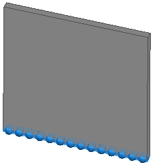
-
Choose the Generate command to solve the generative study. Use the controls in the Generate Study dialog box to define the optimization objective—mimimze weight, maximize surface area, or a tradeoff between the two.
Use the default settings the first time you optimize a part to see the baseline results.
-
Show stress results on the structurally optimized mesh body.
Example: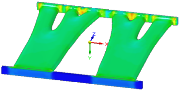
-
Use the Generative Design pane and PathFinder to examine the results.
-
Original design space (1)
-
Original design space and optimized mesh body (2)
-
Optimized mesh body (3)
Example: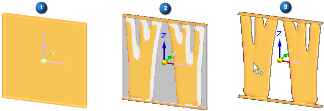
-
-
Review how mass was removed from the optimized structure.
-
Is the result appropriate for your application?
-
Do you want to remove more material (or less)?
-
Do you want to modify the original design body, and then optimize it again?
-
Do you want to test a different load or constraint, or change a value?
You can quickly review the values and settings defined for a generative design study when you hover over an object in the Generative Design pane.
Example: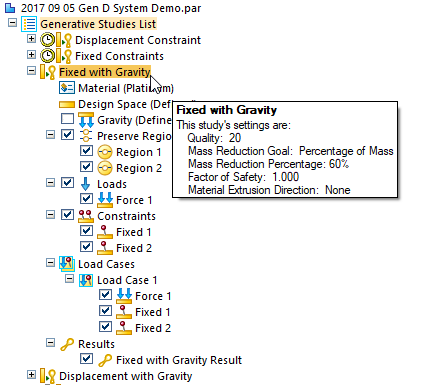
Example: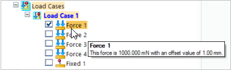
For information about these topics and to learn how you can fine-tune the results, see the individual help topics in Work with Generative Design results.
-
-
For additive manufacturing, you can Print an optimized solid mesh body.
How do I
Generative Design exampleLearn more
Generative Design overviewLook up more details
Setting Generative Design defaultsGenerative Design licenses